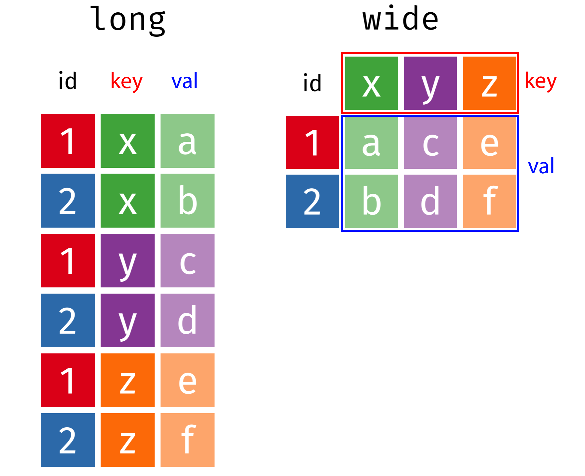
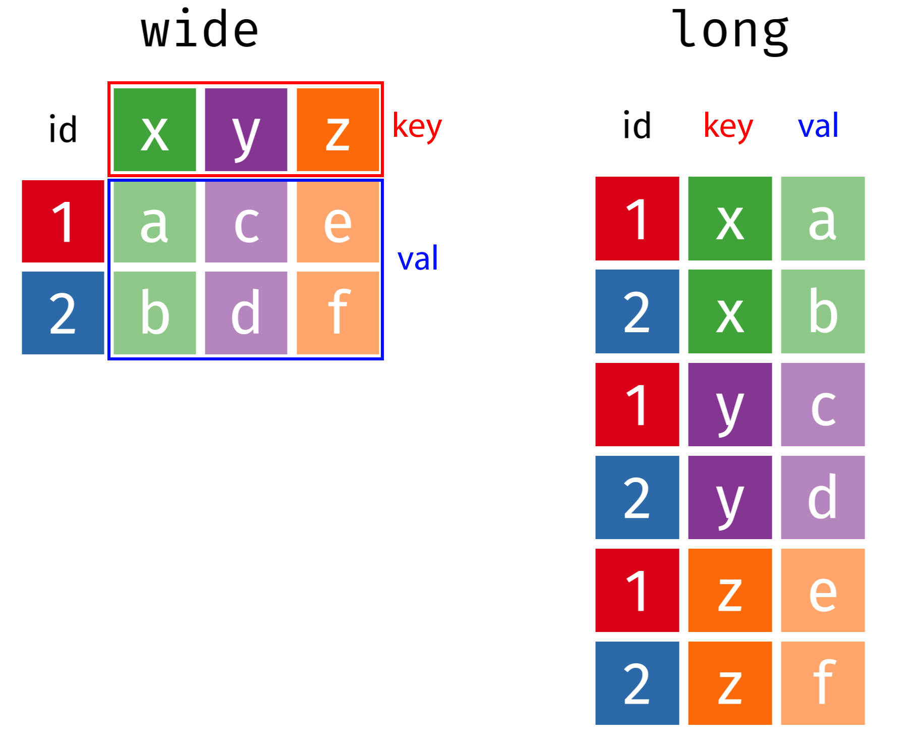
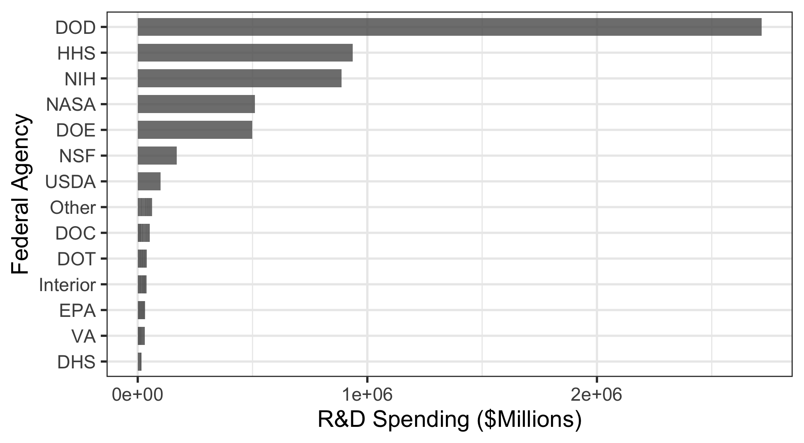
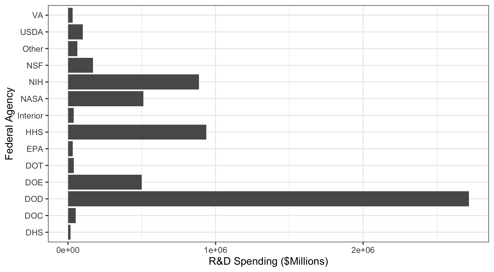
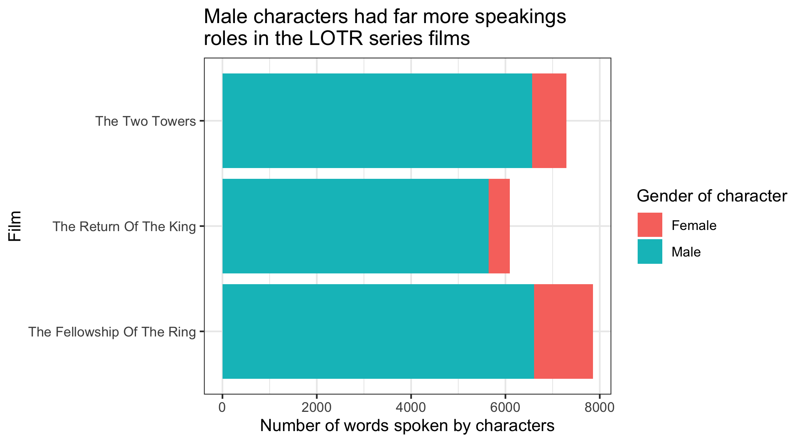
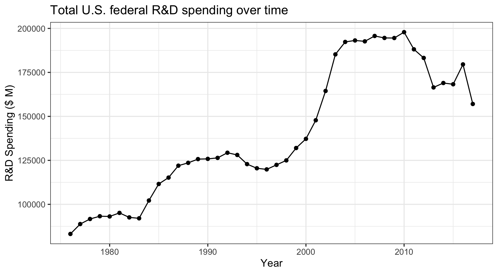

#> # A tibble: 6 × 15
#> year DHS DOC DOD DOE DOT EPA HHS Interior NASA NIH NSF Other USDA VA
#> <dbl> <dbl> <dbl> <dbl> <dbl> <dbl> <dbl> <dbl> <dbl> <dbl> <dbl> <dbl> <dbl> <dbl> <dbl>
#> 1 1976 0 819 35696 10882 1142 968 9226 1152 12513 8025 2372 1191 1837 404
#> 2 1977 0 837 37967 13741 1095 966 9507 1082 12553 8214 2395 1280 1796 374
#> 3 1978 0 871 37022 15663 1156 1175 10533 1125 12516 8802 2446 1237 1962 356
#> 4 1979 0 952 37174 15612 1004 1102 10127 1176 13079 9243 2404 2321 2054 353
#> 5 1980 0 945 37005 15226 1048 903 10045 1082 13837 9093 2407 2468 1887 359
#> 6 1981 0 829 41737 14798 978 901 9644 990 13276 8580 2300 1925 1964 382
Tidy Data
EMSE 4572/6572: Exploratory Data Analysis
John Paul Helveston
September 09, 2026
Week 3: Tidy Data
1. Tidy Data
2. Tidy Data Wrangling
3. Tidy Data Visualization
4. Data Provenance & Curation
5. Writing a Research Question
Week 3: Tidy Data
1. Tidy Data
2. Tidy Data Wrangling
3. Tidy Data Visualization
4. Data Provenance & Curation
5. Writing a Research Question
Federal R&D Spending by Department
Federal R&D Spending by Department
“Wide” format
#> # A tibble: 6 × 15
#> year DHS DOC DOD DOE DOT EPA HHS Interior NASA NIH NSF Other USDA VA
#> <dbl> <dbl> <dbl> <dbl> <dbl> <dbl> <dbl> <dbl> <dbl> <dbl> <dbl> <dbl> <dbl> <dbl> <dbl>
#> 1 1976 0 819 35696 10882 1142 968 9226 1152 12513 8025 2372 1191 1837 404
#> 2 1977 0 837 37967 13741 1095 966 9507 1082 12553 8214 2395 1280 1796 374
#> 3 1978 0 871 37022 15663 1156 1175 10533 1125 12516 8802 2446 1237 1962 356
#> 4 1979 0 952 37174 15612 1004 1102 10127 1176 13079 9243 2404 2321 2054 353
#> 5 1980 0 945 37005 15226 1048 903 10045 1082 13837 9093 2407 2468 1887 359
#> 6 1981 0 829 41737 14798 978 901 9644 990 13276 8580 2300 1925 1964 382
“Long” format
#> # A tibble: 6 × 3
#> department year rd_budget_mil
#> <chr> <dbl> <dbl>
#> 1 DOD 1976 35696
#> 2 NASA 1976 12513
#> 3 DOE 1976 10882
#> 4 HHS 1976 9226
#> 5 NIH 1976 8025
#> 6 NSF 1976 2372Federal R&D Spending by Department
“Wide” format
#> # A tibble: 6 × 15
#> year DHS DOC DOD DOE DOT EPA HHS Interior NASA NIH NSF Other USDA VA
#> <dbl> <dbl> <dbl> <dbl> <dbl> <dbl> <dbl> <dbl> <dbl> <dbl> <dbl> <dbl> <dbl> <dbl> <dbl>
#> 1 1976 0 819 35696 10882 1142 968 9226 1152 12513 8025 2372 1191 1837 404
#> 2 1977 0 837 37967 13741 1095 966 9507 1082 12553 8214 2395 1280 1796 374
#> 3 1978 0 871 37022 15663 1156 1175 10533 1125 12516 8802 2446 1237 1962 356
#> 4 1979 0 952 37174 15612 1004 1102 10127 1176 13079 9243 2404 2321 2054 353
#> 5 1980 0 945 37005 15226 1048 903 10045 1082 13837 9093 2407 2468 1887 359
#> 6 1981 0 829 41737 14798 978 901 9644 990 13276 8580 2300 1925 1964 382Tidy data = “Long” format
- Each variable has its own column
- Each observation has its own row

Tidy data
- Each variable has its own column
- Each observation has its own row
#> # A tibble: 6 × 3
#> department year rd_budget_mil
#> <chr> <dbl> <dbl>
#> 1 DOD 1976 35696
#> 2 NASA 1976 12513
#> 3 DOE 1976 10882
#> 4 HHS 1976 9226
#> 5 NIH 1976 8025
#> 6 NSF 1976 2372
“Long” format
#> # A tibble: 6 × 3
#> department year rd_budget_mil
#> <chr> <dbl> <dbl>
#> 1 DOD 1976 35696
#> 2 NASA 1976 12513
#> 3 DOE 1976 10882
#> 4 HHS 1976 9226
#> 5 NIH 1976 8025
#> 6 NSF 1976 2372
“Wide” format
#> # A tibble: 6 × 15
#> year DHS DOC DOD DOE DOT EPA HHS Interior NASA NIH NSF Other USDA VA
#> <dbl> <dbl> <dbl> <dbl> <dbl> <dbl> <dbl> <dbl> <dbl> <dbl> <dbl> <dbl> <dbl> <dbl> <dbl>
#> 1 1976 0 819 35696 10882 1142 968 9226 1152 12513 8025 2372 1191 1837 404
#> 2 1977 0 837 37967 13741 1095 966 9507 1082 12553 8214 2395 1280 1796 374
#> 3 1978 0 871 37022 15663 1156 1175 10533 1125 12516 8802 2446 1237 1962 356
#> 4 1979 0 952 37174 15612 1004 1102 10127 1176 13079 9243 2404 2321 2054 353
#> 5 1980 0 945 37005 15226 1048 903 10045 1082 13837 9093 2407 2468 1887 359
#> 6 1981 0 829 41737 14798 978 901 9644 990 13276 8580 2300 1925 1964 382Do the names describe the values?
Yes: “Long” format
#> # A tibble: 6 × 3
#> department year rd_budget_mil
#> <chr> <dbl> <dbl>
#> 1 DOD 1976 35696
#> 2 NASA 1976 12513
#> 3 DOE 1976 10882
#> 4 HHS 1976 9226
#> 5 NIH 1976 8025
#> 6 NSF 1976 2372
No: “Wide” format
#> # A tibble: 6 × 8
#> year DHS DOC DOD DOE DOT EPA HHS
#> <dbl> <dbl> <dbl> <dbl> <dbl> <dbl> <dbl> <dbl>
#> 1 1976 0 819 35696 10882 1142 968 9226
#> 2 1977 0 837 37967 13741 1095 966 9507
#> 3 1978 0 871 37022 15663 1156 1175 10533
#> 4 1979 0 952 37174 15612 1004 1102 10127
#> 5 1980 0 945 37005 15226 1048 903 10045
#> 6 1981 0 829 41737 14798 978 901 9644Quick practice 1: “long” or “wide” format?
Description: Tuberculosis cases in various countries
#> # A tibble: 6 × 4
#> country year cases population
#> <chr> <dbl> <dbl> <dbl>
#> 1 Afghanistan 1999 745 19987071
#> 2 Afghanistan 2000 2666 20595360
#> 3 Brazil 1999 37737 172006362
#> 4 Brazil 2000 80488 174504898
#> 5 China 1999 212258 1272915272
#> 6 China 2000 213766 1280428583Quick practice 2: “long” or “wide” format?
Description: Word counts in LOTR trilogy
#> # A tibble: 9 × 4
#> Film Race Female Male
#> <chr> <chr> <dbl> <dbl>
#> 1 The Fellowship Of The Ring Elf 1229 971
#> 2 The Fellowship Of The Ring Hobbit 14 3644
#> 3 The Fellowship Of The Ring Man 0 1995
#> 4 The Return Of The King Elf 183 510
#> 5 The Return Of The King Hobbit 2 2673
#> 6 The Return Of The King Man 268 2459
#> 7 The Two Towers Elf 331 513
#> 8 The Two Towers Hobbit 0 2463
#> 9 The Two Towers Man 401 3589Quick practice 3: “long” or “wide” format?
Description: Word counts in LOTR trilogy
#> # A tibble: 15 × 4
#> Film Race Gender Word_Count
#> <chr> <chr> <chr> <dbl>
#> 1 The Fellowship Of The Ring Elf Female 1229
#> 2 The Fellowship Of The Ring Elf Male 971
#> 3 The Fellowship Of The Ring Hobbit Female 14
#> 4 The Fellowship Of The Ring Hobbit Male 3644
#> 5 The Fellowship Of The Ring Man Female 0
#> 6 The Fellowship Of The Ring Man Male 1995
#> 7 The Return Of The King Elf Female 183
#> 8 The Return Of The King Elf Male 510
#> 9 The Return Of The King Hobbit Female 2
#> 10 The Return Of The King Hobbit Male 2673
#> 11 The Return Of The King Man Female 268
#> 12 The Return Of The King Man Male 2459
#> 13 The Two Towers Elf Female 331
#> 14 The Two Towers Elf Male 513
#> 15 The Two Towers Hobbit Female 0Reshaping data with
pivot_longer() and pivot_wider()
Reshaping data
pivot_longer()pivot_wider()

From “long” to “wide” with pivot_wider()

From “long” to “wide” with pivot_wider()
#> # A tibble: 6 × 15
#> year DOD NASA DOE HHS NIH NSF USDA Interior DOT EPA DOC DHS VA Other
#> <dbl> <dbl> <dbl> <dbl> <dbl> <dbl> <dbl> <dbl> <dbl> <dbl> <dbl> <dbl> <dbl> <dbl> <dbl>
#> 1 1976 35696 12513 10882 9226 8025 2372 1837 1152 1142 968 819 0 404 1191
#> 2 1977 37967 12553 13741 9507 8214 2395 1796 1082 1095 966 837 0 374 1280
#> 3 1978 37022 12516 15663 10533 8802 2446 1962 1125 1156 1175 871 0 356 1237
#> 4 1979 37174 13079 15612 10127 9243 2404 2054 1176 1004 1102 952 0 353 2321
#> 5 1980 37005 13837 15226 10045 9093 2407 1887 1082 1048 903 945 0 359 2468
#> 6 1981 41737 13276 14798 9644 8580 2300 1964 990 978 901 829 0 382 1925From “wide” to “long” with pivot_longer()

From “wide” to “long” with pivot_longer()
#> # A tibble: 6 × 15
#> year DOD NASA DOE HHS NIH NSF USDA Interior DOT EPA DOC DHS VA Other
#> <dbl> <dbl> <dbl> <dbl> <dbl> <dbl> <dbl> <dbl> <dbl> <dbl> <dbl> <dbl> <dbl> <dbl> <dbl>
#> 1 1976 35696 12513 10882 9226 8025 2372 1837 1152 1142 968 819 0 404 1191
#> 2 1977 37967 12553 13741 9507 8214 2395 1796 1082 1095 966 837 0 374 1280
#> 3 1978 37022 12516 15663 10533 8802 2446 1962 1125 1156 1175 871 0 356 1237
#> 4 1979 37174 13079 15612 10127 9243 2404 2054 1176 1004 1102 952 0 353 2321
#> 5 1980 37005 13837 15226 10045 9093 2407 1887 1082 1048 903 945 0 359 2468
#> 6 1981 41737 13276 14798 9644 8580 2300 1964 990 978 901 829 0 382 1925#> # A tibble: 6 × 3
#> year department rd_budget_mil
#> <dbl> <chr> <dbl>
#> 1 1976 DOD 35696
#> 2 1976 NASA 12513
#> 3 1976 DOE 10882
#> 4 1976 HHS 9226
#> 5 1976 NIH 8025
#> 6 1976 NSF 2372Can also set cols by selecting which columns not to use
#> # A tibble: 6 × 3
#> year department rd_budget_mil
#> <dbl> <chr> <dbl>
#> 1 1976 DOD 35696
#> 2 1976 NASA 12513
#> 3 1976 DOE 10882
#> 4 1976 HHS 9226
#> 5 1976 NIH 8025
#> 6 1976 NSF 2372Your turn: Reshaping Data
Open the practice.qmd file.
Run the code chunk to read in the following two data files:
pv_cell_production.xlsx: Data on solar photovoltaic cell production by countrymilk_production.csv: Data on milk production by state
Now modify the format of each:
- If the data are in “wide” format, convert it to “long” with
pivot_longer() - If the data are in “long” format, convert it to “wide” with
pivot_wider()
Week 3: Tidy Data
1. Tidy Data
2. Tidy Data Wrangling
3. Tidy Data Visualization
4. Data Provenance & Curation
5. Writing a Research Question
Why do we need tidy data?
(a quick explanation with cute graphics, by Allison Horst)
Tidy data wrangling
Compute the total R&D spending in each year
#> # A tibble: 6 × 15
#> year DOD NASA DOE HHS NIH NSF USDA Interior DOT EPA DOC DHS VA Other
#> <dbl> <dbl> <dbl> <dbl> <dbl> <dbl> <dbl> <dbl> <dbl> <dbl> <dbl> <dbl> <dbl> <dbl> <dbl>
#> 1 1976 35696 12513 10882 9226 8025 2372 1837 1152 1142 968 819 0 404 1191
#> 2 1977 37967 12553 13741 9507 8214 2395 1796 1082 1095 966 837 0 374 1280
#> 3 1978 37022 12516 15663 10533 8802 2446 1962 1125 1156 1175 871 0 356 1237
#> 4 1979 37174 13079 15612 10127 9243 2404 2054 1176 1004 1102 952 0 353 2321
#> 5 1980 37005 13837 15226 10045 9093 2407 1887 1082 1048 903 945 0 359 2468
#> 6 1981 41737 13276 14798 9644 8580 2300 1964 990 978 901 829 0 382 1925Tidy data wrangling
Compute the total R&D spending in each year
Approach 1: Create new total by adding each variable
#> # A tibble: 42 × 2
#> year total
#> <dbl> <dbl>
#> 1 1976 86227
#> 2 1977 91807
#> 3 1978 94864
#> 4 1979 96601
#> 5 1980 96305
#> 6 1981 98304
#> 7 1982 95448
#> 8 1983 95010
#> 9 1984 105371
#> 10 1985 114818
#> # ℹ 32 more rowsTidy data wrangling
Compute the total R&D spending by department in each year
Approach 2: Reshape first, then summarise
#> # A tibble: 6 × 3
#> year department rd_budget_mil
#> <dbl> <chr> <dbl>
#> 1 1976 DOD 35696
#> 2 1976 NASA 12513
#> 3 1976 DOE 10882
#> 4 1976 HHS 9226
#> 5 1976 NIH 8025
#> 6 1976 NSF 2372#> # A tibble: 42 × 2
#> year total
#> <dbl> <dbl>
#> 1 1976 86227
#> 2 1977 91807
#> 3 1978 94864
#> 4 1979 96601
#> 5 1980 96305
#> 6 1981 98304
#> 7 1982 95448
#> 8 1983 95010
#> 9 1984 105371
#> 10 1985 114818
#> # ℹ 32 more rowsTidy data wrangling
Compute the total R&D spending by department in each year
Approach 2: Reshape first, then summarise
Tidy data wrangling
Compute the total R&D spending by department in each year
Approach 2: Reshape first, then summarise
Your turn: Tidy Data Wrangling
Open the practice.qmd file.
Run the code chunk to read in the following two data files:
gapminder.csv: Life expectancy in different countries over timegdp.csv: GDP of different countries over time
Now convert the data into a tidy (long) structure, then create the following summary data frames:
- Mean life expectancy in each year.
- Mean GDP in each year.
Break
Week 3: Tidy Data
1. Tidy Data
2. Tidy Data Wrangling
3. Tidy Data Visualization
4. Data Provenance & Curation
5. Writing a Research Question
Tidy data vizualization
Make a bar chart of total R&D spending by agency
#> # A tibble: 6 × 15
#> year DOD NASA DOE HHS NIH NSF USDA Interior DOT EPA DOC DHS VA Other
#> <dbl> <dbl> <dbl> <dbl> <dbl> <dbl> <dbl> <dbl> <dbl> <dbl> <dbl> <dbl> <dbl> <dbl> <dbl>
#> 1 1976 35696 12513 10882 9226 8025 2372 1837 1152 1142 968 819 0 404 1191
#> 2 1977 37967 12553 13741 9507 8214 2395 1796 1082 1095 966 837 0 374 1280
#> 3 1978 37022 12516 15663 10533 8802 2446 1962 1125 1156 1175 871 0 356 1237
#> 4 1979 37174 13079 15612 10127 9243 2404 2054 1176 1004 1102 952 0 353 2321
#> 5 1980 37005 13837 15226 10045 9093 2407 1887 1082 1048 903 945 0 359 2468
#> 6 1981 41737 13276 14798 9644 8580 2300 1964 990 978 901 829 0 382 1925
Tidy data vizualization
Make a bar chart of total R&D spending by agency
#> Error in `geom_col()`:
#> ! Problem while computing aesthetics.
#> ℹ Error occurred in the 1st layer.
#> Caused by error:
#> ! object 'rd_budget_mil' not found
Tidy data vizualization
Make a bar chart of total R&D spending by agency

Your turn: Tidy Data Visualization
Run the code chunk to read in the two data files, then convert the data into a tidy (long) structure to create the following charts:


Week 3: Tidy Data
1. Tidy Data
2. Tidy Data Wrangling
3. Tidy Data Visualization
4. Data Provenance & Curation
5. Writing a Research Question
Data provenance - It matters where you get your data
Validity:
- Is this data trustworthy? Is it authentic?
- Where did the data come from?
- How has the data been changed / managed over time?
- Is the data complete?
Comprehension:
- Is this data accurate?
- Can you explain your results?
- Is this the right data to answer your question?
Reproducibility:
- I should be able to fully replicate your results from your raw data and code.
Document your source like a museum curator
Example: View README.md file in the data folder
Whenever you download data, you should at a minimum record the following:
- The name of the file you are describing.
- The date you downloaded it.
- The original name of the downloaded file (in case you renamed it).
- The url to the site you downloaded it from.
- The source of the original data (sometimes different from the site you downloaded it from).
- A short description of the data, maybe how they were collected (if available).
- A dictionary for the data (e.g. a simple markdown table describing each variable).
Your turn
Documentation in the “data/README.md” file is missing for the following data sets:
- wildlife_impacts.csv: source
- north_america_bear_killings.txt: source
- uspto_clean_energy_patents.xlsx: source
Go to the above sites and add the following information to the “data/README.md” file:
- The name of the downloaded file.
- The web address to the site you downloaded the data from.
- The source of the original data (if different from the website).
- A short description of the data and how they were collected.
- A dictionary for the data (hint: the site might already have this!).
Week 3: Tidy Data
1. Tidy Data
2. Tidy Data Wrangling
3. Tidy Data Visualization
4. Data Provenance & Curation
5. Writing a Research Question
Writing a research question
Follow these guidelines - your question should be:
- Clear: your audience can easily understand its purpose without additional explanation.
- Focused: it is narrow enough that it can be addressed thoroughly with the data available and within the limits of the final project report.
- Concise: it is expressed in the fewest possible words.
- Complex: it is not answerable with a simple “yes” or “no,” but rather requires synthesis and analysis of data.
- Arguable: its potential answers are open to debate rather than accepted facts (do others care about it?)
Writing a research question
Bad question: Why are social networking sites harmful?
- Unclear: it does not specify which social networking sites or state what harm is being caused; assumes that “harm” exists.
Improved question: How are online users experiencing or addressing privacy issues on social networking sites such as Facebook and Twitter?
- Specifies the sites (Facebook and Twitter), type of harm (privacy issues), and who is harmed (online users).
Writing a research question
Example from previous classes:
- Genders in the Workforce: How has the US gender wage gap changed over time for different occupations and age groups?
- NFL Suspensions: What factors contribute to the severity of disciplinary actions towards NFL players from 2002-2014?
Other good examples: See the Example Projects page